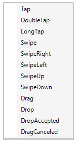
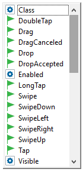

The UX (User eXperience, look & Feel) of the applications is very important on mobile platforms. This can be improved by a better design, better screen navigation, and also how the information is organized throughout the whole app. But there is also a key feature that the users of Native Mobile expect, that is the applications react to what they do on their devices.
In touchscreen devices, the way to input information or commands is done by interacting with the screen.
These inputs are called gestures and the applications have to consider them to provide a good UX.
All these gestures are encoded in GeneXus as events related to the screen controls.
The first mechanism is by right-clicking on the user control (previously dragged from the toolbox to the layout).
This action will display a contextual menu (as it is shown below) with every possible event associated with that control.

Once you select one of these options, automatically will be redirected from the Layout tab to the Event tab and the selected event associated with the control (in this case a TextBlock named "Textblock1") will be ready to be filled.
Event Textblock1.Tap
Msg("Textblock Tap Event Executed")
EndEvent
As an alternative mechanism, you can be positioned on the Event tab and start writing the event with a suggest menu.
This menu will be displayed when you write the Control Name of the control following by a dot (e.g. 'Textblock1.').

Some of the objects that support touch events are containers; others are non-editable controls. There is a special consideration when control and container have touch events.
Suppose in a layout you have a table control, named MainTable, and an image control, named MyImg, inside the MainTable control (i.e. MainTable is a container).
Furthermore, for MainTable it was codified the Tap and Swipe events. And for MyImag you have LongTap and Swipe.
If a Tap Event is executed on MyImg (as it doesn't handle it) the touch event is propagated to its container following a hierarchically order until one container is found which handles the tap event. In our case, the Tap event of the MainTable will be executed.
If a swipe event is performed to MyImg the only code executed will be the one defined for MyImg.Swipe as the event was executed this is not propagated to its container.
For the user to receive feedback when executing a gesture, the Tap, DoubleTap, and LongTap gestures trigger the highlighting of the control. That is: if you tap on a control, its "Highlighted Background" class property will be considered to give feedback to the user.
| Backlinks | |
| Client-side Events in Native Mobile Applications | |
| Category:Control Events | Toc:Native Mobile Applications Development |